개발 일지
다시 메인 페이지로 돌아가기 home
2022년 7월
7월 31일
기존에 홀로 있던 메인페이지에 개발 일지 페이지와 시험용 메모장 페이지 개설
2022년 8월
8월 01일

소수 판별기 추가

소수 판별기 작동 전 모습입니다.
CSS로 조금 꾸며서 기본적인 딱딱한 버튼 대신 조금 부드러워 보이는 모습입니다. 그럼에도 home 버튼은 확실히 꾸며야겠다는 생각이 듭니다.

소수 판별기 작동 후 모습입니다.
어떤 수를 입력하면 소수 여부를 띄워주고, 계산 시간이 얼마나 걸렸는지 알려줍니다. (사용자 기기별로 상이함)

합성수를 입력했을 때 모습입니다.
가장 작은 소인수를 보여줍니다.
8월 02일

헤더를 만들어보았습니다.
원래는 header.html 파일로 분리해서 더 편하게 만들고 싶었는데 html은 html을 직접적으로는 불러올 수 없다고 합니다. (자바스크립트니...제이쿼리니...그런걸 사용해야만...)
그래서 온갖 방법을 검색하고 그대로 따라해봤지만 진짜 단 하나도 성공하지 못해서 그냥 index.html 파일에 직접 입력했습니다.
(약 3시간 후...)

현존하는 모든 방법중에 제일 기괴한 방식으로 어떻게든 만드는데에 성공했습니다.
장기적으로는 저 기괴한 방식을 가능한 현대적인 방식으로 만드는 것을 시도해야겠습니다.
또한 저 방식으로 할 때, a태그의 경우 그냥 따옴표를 쓰면 오류가 발생하므로 (("~~" link "~~") 같은 상태여서) 꼭 문자열 안에서는 \"로 사용해주도록 합니다.
내일은 1. 헤더 부분의 math 부분을 채우거나 2. CSS로 헤더를 꾸며보는 일을 해봐야겠습니다.
8월 03일
8월 3일자 개발 일지부터는 접기 기능을 추가하여 조금 더 간단하게 원하는 부분만 볼 수 있도록 해봅니다.

헤더의 각 요소에 클래스를 설정해주었습니다.
헤더의 글씨 두께를 단지 얇게 설정했을 뿐인데 생각보다 괜찮은 모습입니다.

허나 각 요소 (Home, Math...)를 가로로 정렬하는데에는 실패했습니다. 수평 정렬하게 해준다는 CSS 코드를 다 널어봤는데 실패한 모습입니다.

우선 ul 태그와 li 태그 전체를 쪼개는 방법으로 해보았지만 이 방법 대로라면 앞으로 header를 제외하면 ul과 li 태그를 쓰는게 매우 껄끄러워지는 상황이 될 것입니다.

class 를 지정한 위치를 바꿔보았더니 성공합니다.
잘 생각해보면 기존에는 li 박스 안의 a 태그에 class 를 지정했습니다.
li 박스 안에서 a태그를 두세개 넣으면 그 a 태그들이 수평으로 연결되는 방식이었던 셈입니다.
제가 하고 싶었던 것은 li 박스를 수평으로 연결 시키고 싶었으니 li 태그에 class를 넣는것이 맞습니다.
물론 그럼에도 아직 h1 태그로 만든 Hello World가 희한하게 오른쪽에 붙어있는 모습입니다.

그냥 Hello World 앞에 br 태그를 붙여서 강제로 줄바꿈 효과를 만들어줍니다.

또한 footer를 만들어보았습니다.
허나 일반적인 글과 잘 구분이 되지 않으므로 내일은 footer를 구분하는 일을 해보아야겠습니다. (header는 그래도 조금 구분된 감이 없지 않아 있는데...)
전날 해야겠다고 생각했던 일과 합치면 내일은 1. 헤더 부분의 math 부분 글을 쓰거나 2. footer를 구분해보는 일을 해봐야겠습니다.
8월 04일
8월 4일자 개발 일지부터는 사진이 너무 크므로 height를 400으로 제한하여 올려봅니다.

header의 CSS 코드에 조금 추가를 해보았습니다.
저 부분에 display flex 같은 속성을 추가해주었더니 전날 발생했던 Hello World 타이틀이 헤더 옆으로 가는 현상을 막아주었습니다. (분명히 더 유연해지는 코드라고 했는데 왜 되는지는 잘 모르겠습니다...)
(찾아보니 justify-content space-between 부분이 알아서 공간을 잘 맞춰주는 그런 역할을 한다고 합니다.)

header와 footer가 확실히 구분되게는 해보았지만 헤더 부분이 아무래도 이상합니다. container Class에 width 1270px을 먹인것이 문제인듯 합니다.

container Class에 width 100%를 먹여줍니다.
이제 어떤 화면 크기로 보든 header가 꽉 차있는 모습을 보여줄 것입니다. 일종의 반응형 웹 만들기...를 시작한 셈입니다
그러고 보니 footer가 공중에 붕 떠있는 모습이 보기에 별로 좋지는 않습니다.

분명히 본문을 wrapper로 감싸고 저렇게 CSS 코드를 짜면 바닥에 붙는다고 검색결과 나왔었는데 역시나 안되는 모습입니다.

다른 방식으로 본문을 wrapper로 감싸고 footer까지 감싸는 all-wrapper를 만들고 그걸 가지고 하면 나온다고 검색결과가 나왔지만 이번엔 헤더가 떠버립니다.

거기다가 스크롤을 잘 굴리면 저렇게 아예 박살나버리는 상황이 옵니다.
우선 다 없던 일로 하고 footer 관련 id를 다 지워줍니다.

본문 콘텐츠가 적어 footer가 띄워진다면 footer 크기를 아주 크게 키워서 아무튼 어쨌든 바닥에 닿도록 처리해줍니다.
footer에 아주 많은 컨텐츠를 담아야 할 듯 합니다. 원래는 header를 꾸미려 했는데 우선 방대한 footer에 무엇인가를 채워야겠습니다.
전날 해야겠다고 생각했던 일과 합치면 내일은 1. 헤더 부분의 math 부분 글을 쓰거나 2. footer에 컨텐츠를 채우는 일을 해봐야겠습니다.
8월 05일
8월 5일자 개발 일지부터는 개발 일지부터는 사진 height를 500으로 바꿔봅니다. (사진이 깨지는 감이 있어서...)

아무리 그래도 450px이나 되는 footer는 너무 큰 듯 합니다.

아예 header부터 footer까지 전부 wrap으로 감싸고 min-height를 100vh로 하니까 되는 모습입니다.
vh는 %와는 다르게 부모가 아닌 뷰포트를 기준으로 한 단위라고 소개되어있습니다. 대략 다른 요소와는 관계없이 보는 사람 화면에 알아서 맞춰준다는 뜻으로 이해하면 될 듯 합니다.

명색이 블로그인데 블로그의 내용도 채워보도록 해줍니다.
github에서 마크다운 문서의 경우 달러 표시 두개로 감싼 것은 모두 수식이 되었었는데 전혀 되질 않는 모습입니다.
HTML(Hyper Text Markup Language)은 마크업 입니다.

다음과 같은 JS 코드를 넣어주면 잘 동작하는 모습을 보여줍니다.

글마다 저 몇줄짜리 기다란걸 쓰고 있을걸 생각하니 막막해집니다.
header, footer를 만드는 JS코드를 썼던 것처럼 그냥 (((LaTex를 인식)하게 하는 JS코드)를 쓰는 JS코드)를 만들어서 분리 시켜줍니다.

이 블로그에서 처음으로 자바스크립트 프로그램 만든게 소수 판별기 이므로 소수 판별법에 관한 글을 쓰기로 합니다.
소수는 우선 크게 정수론 아래에 있으니 정수론 안에 넣어주고, 소수에 관련한 이야기도 엄청 많으니 소수 카테고리를 만들어줍니다.
정수론 카테고리 안에 또 소수 카테고리를 만든 셈입니다.
이제 지금 고민은 앞으로 블로그에 쓰는 콘텐츠들을 어떻게 배치할까의 고민입니다.
Math/NumberTheory/Prime/PrimarityTest.html 형식으로 폴더 안의 폴더 안에... 처리한다면 보기에는 예쁘지만
나중에 정수론을 포괄하는 또 다른 폴더를 만들게 된다면 모든 a태그 주소를 다 바꿔줘야 하는 끔찍한 상황에 빠집니다.
Post/Post00001-00100/00001.html 형식으로 따로 포스트만 들어가는 폴더를 만든다면 나중에 처리하기엔 예쁘지만
딱히 보기는 그닥 예쁘진 않는 그런 상황이 펼쳐집니다.
이 부분에 대해서는 고민해봐야겠습니다.
전날 해야겠다고 생각했던 일과 합치면 내일은 1. math 폴더 형식을 정하고 2. 그 안에 콘텐츠를 넣고 3. footer에 컨텐츠를 채우는 일을 해봐야겠습니다.
8월 06일
 YTN 에서는 기사를 다음과 같이 처리합니다.
YTN 에서는 기사를 다음과 같이 처리합니다.
첫 0108은 날씨에 붙은 코드인듯 하고, (과학기사는 0105) 2022년 08월 06일 16시 09분에 올라온...당일의 526655번 기사로 보입니다.
따라서 전날에 했던 글 분류를 어떻게 할 것인가의 고민은 그냥 post/00001.html 형식으로 만드는걸로 했습니다.
 다른 글 쓰기 전에 먼저 aside 부터 우선은 만들고 가기로 했습니다.
다른 글 쓰기 전에 먼저 aside 부터 우선은 만들고 가기로 했습니다.
글 100개 썼는데 그때서야 aside 만들고 그거 하나하나 쓰고 있을 생각하면 막막합니다.
우선 aside에 무얼 채울지 감이 안와서 그대로 놔둬줍니다. (저 사진 이후 home과 githubRepo만 임시로 채워줍니다.)
전날 해야겠다고 생각했던 일과 합치면 내일은 1. math 카테고리에 글 쓰기 2. footer에 컨텐츠를 채우는 일과 3. aside에 컨텐츠를 채우는 일을 해봐야겠습니다.
8월 10일

블로그답게 드디어 첫 글을 써넣어봤습니다.
다른 사이트들 aside도 생각보다는 넓어서 더 확장했습니다.
첫 글을 쓰고나니 우선 고칠 부분이 많이 보입니다.
우선 줄 간격도 조금 넓혀야 할 듯 하고 글씨체도...
미적으로 아주 조예가 깊진 않지만 무언가 '저건 아니다' 라는 감각이 느껴집니다.
아무래도 내일은 적합한 글씨체 찾는 것도 알아봐야 할 듯 합니다.
8월 16일

details 태그를 확실히 구분할 수 있도록 태그를 둘러싸는 테두리를 만들어주었습니다.

우선 맨 위의 소수판별법 제외하고 아직 쓰지 읺은 글들 입니다. 이렇게 미리 쓸 글 목록을 깔아놔야 글을 지속적으로 쓸 생각이 생길듯 합니다.
8월 18일

마치 고전적 웹에서 볼 것 같은 밑줄 있는 a태그 대신 테두리로 둘러싼 a태그를 만들어줍니다. (그렇다고 또 최신식 웹으로 보이진 않습니다...)
그냥 a태그를 둘러싸는 테두리를 만들면 무조건 칸을 삐져나와서 진짜 보기 안좋으나, a태그에 display: inline-block 속성을 먹여주자 칸을 잘 차지하는 모습입니다.
여기서 a태그를 꾸미는 방법은 간단히 알았으니 더더욱 꾸미는 그런 것들은 추후에 하기로 합니다.
또한, section(본문) 부분에 margin: 10px 속성을 먹여줘서 기존의 화면 왼쪽에 딱 붙는 그런 상황을 피하게 되었습니다.
8월 19일

블로그 두번째 글을 쓰고, a태그를 더 꾸며보았습니다.
원래는 a태그를 감싸는 이중 테두리를 만들어주었으나, 뭔가 좀 큰 부피를 차지한다는 느낌을 적지 않게 받았습니다.
우연히 다른 블로그를 보다가 링크에 파란 점선 밑줄을 달아준 것을 보고, 저렇게 꾸미는게 조금 더 a태그 스럽다는 느낌을 받고 border-bottom 에 dashed 3px blue 속성을 먹여주었습니다.
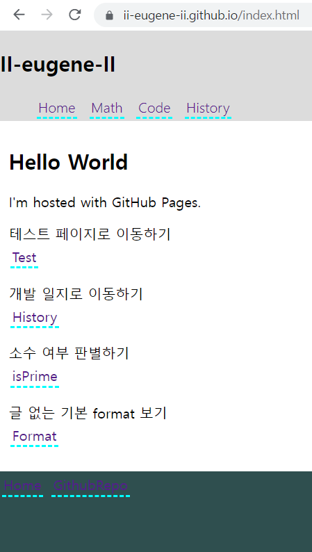
색깔이 너무 쨍한듯 싶어 blue에서 Aqua로 바꿔줍니다. 기왕이면 미리 이름 정해진 색상을 어딘가에 표로 정리해두면 좋겠다는 생각을 해봅니다.
8월 20일
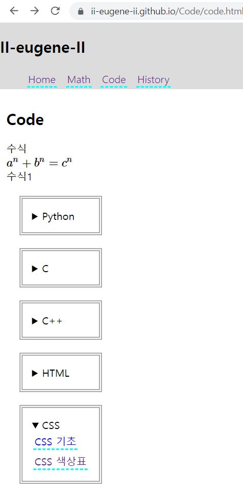
기존의 Header에서 유일하게 비어있던 Code 챕터를 생성함으로서, Header에서 이제 모든 버튼들이 원했던 대로 작동합니다.
각종 언어별로 중요한 메모 거리가 있으면 적을 예정입니다. 첫 글은 어제 생각했던 CSS 색상표 입니다.
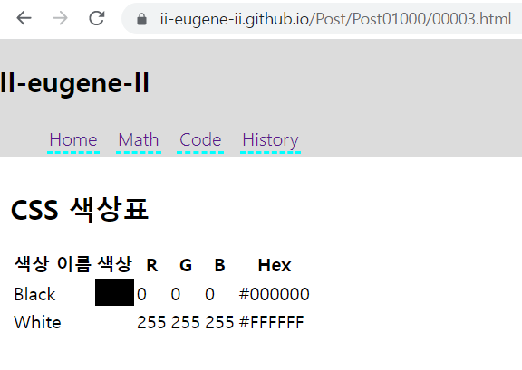
HTML의 Table 기능으로 표를 만들었는데 기본 설정이 외곽선이 없는 건지는 몰랐습니다. 모든 HTML 태그 중에 선을 제공하는건 a태그 밖에 없는듯 합니다.
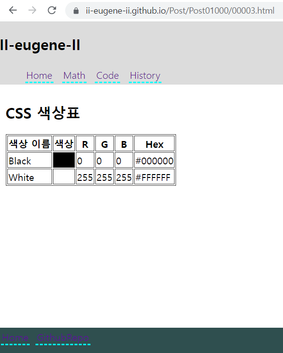
table, th, td에 border: 1px solid #444444 속성을 먹여줌으로 이제 비교적 깔끔한 구분이 가능해졌습니다. 색상표 내용은 색깔이 500개가 넘으므로 천천히 채워주기로 합니다.
8월 22일
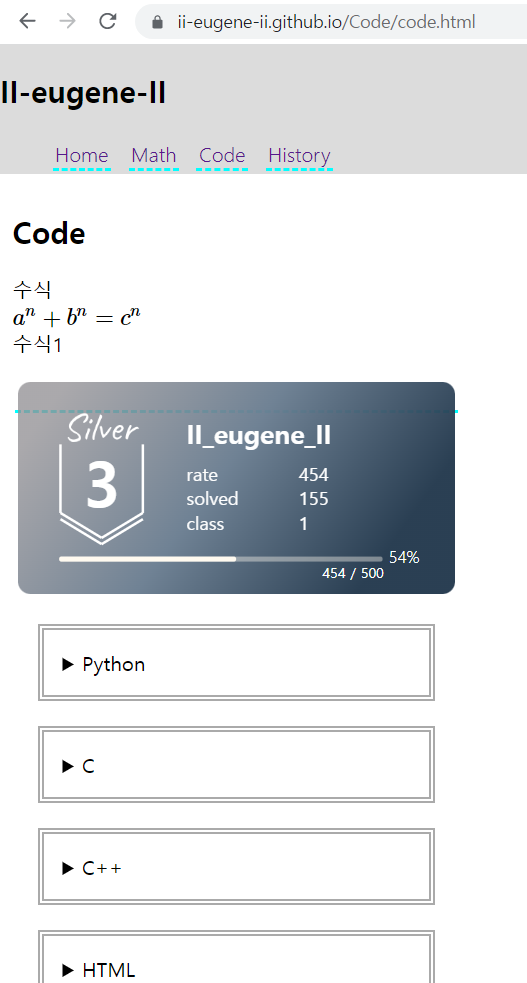
허전했던 Code 챕터에 문제 풀이 사이트 백준의 티어를 띄워줍니다.
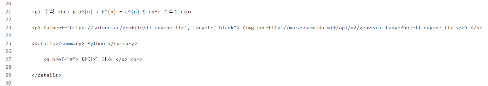
먼저 백준 계정을 solved ac에 연계를 해준 다음, HTML 태그를 저렇게 달아주면 예쁜 모양의 백준 티어가 뜨게 됩니다.
오른쪽에 있는 사이트 (mazas...) 에서 해당 계정에 맞는 이미지 파일을 만들어서 띄어주는 형식으로 보입니다. 각자에게 맞는 아이디를 삽입하면 됩니다. (II_eugene_II 부분)
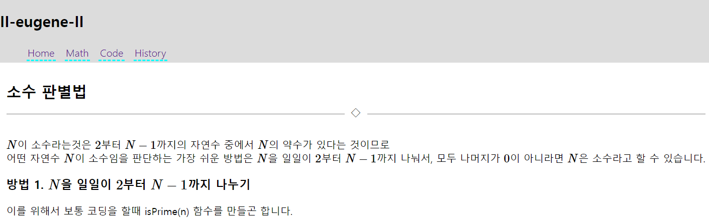
제목과 본문을 분리하는 가로선을 hr 태그를 사용하여 그어줬습니다.
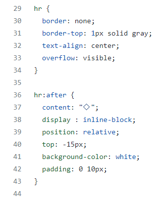
간단히 설명한다면, border에 none 속성을 먹여서 초기화 시켜주고, top에만 1px 짜리를 만들어서 직선을 만들어준 후, 가운데 정렬(center 속성)해준 후, 글자가 넘치더라도 보이게 해주는 (overflow : visible) 속성을 먹여줍니다.
원래 hr 태그는 그냥 줄 만 있는 속성이므로, 가운데에 글자를 넣어주려면 가상의 클래스인 after를 만들어줍니다.
content에 ◇ 모양을 띄워달라고 하고, 줄에 가리지 않도록 글자 근처 부분만 뒷 배경을 희게 해줍니다.
통상적으로는 ☆, §, ◎, ◇, ♥ 등의 문자로 꾸미는 듯 합니다.
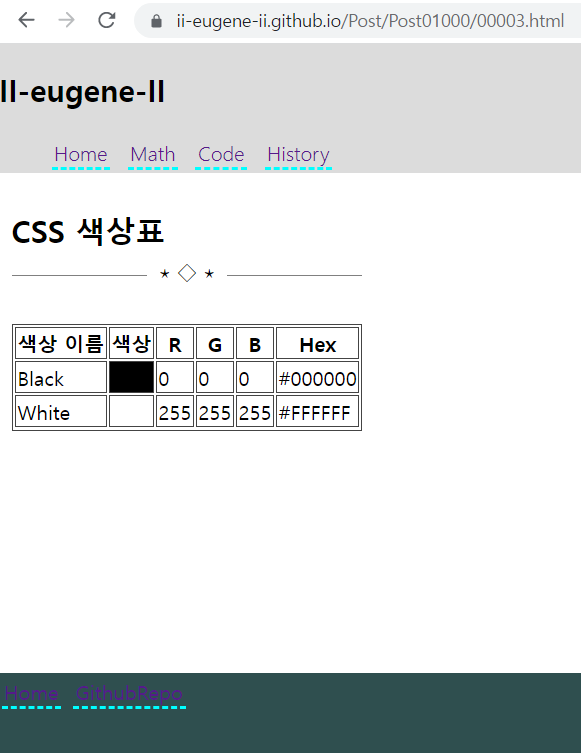
예쁜 특수문자 없나 찾아보다가 다이아몬드 옆에 작은 별을 붙여주었습니다.
드디어 좀 블로그 다운 블로그가 만들어지는 느낌이 듭니다.
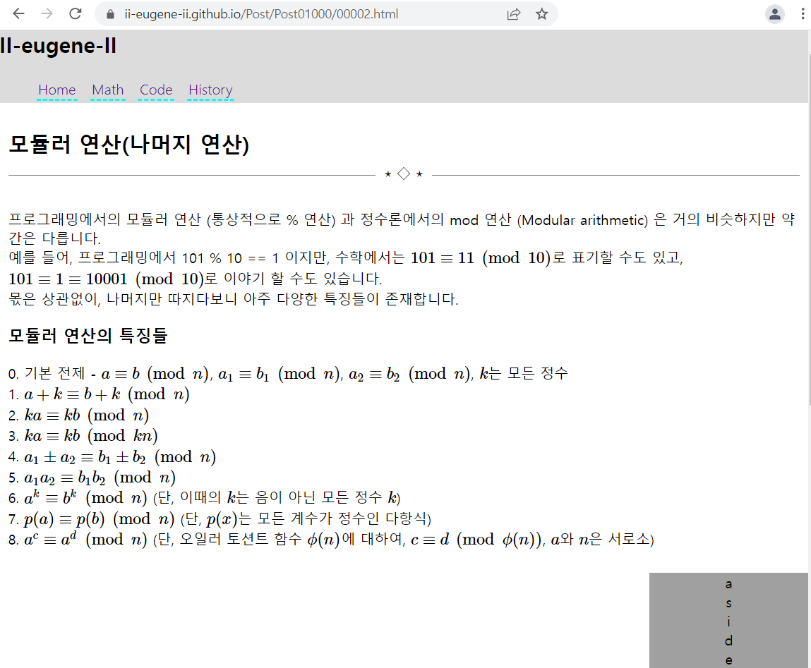
하지만 벌써 블로그 다운 블로그가 되었을리 만무합니다.
article의 양이 길다면 aside가 밑으로 가버리는 문제입니다.
과거에 article을 왼쪽으로, aside를 오른쪽으로 보냈음에도, article의 양이 길어서 오른쪽까지 다 가버리면 aside는 어쨌든 오른쪽에 붙기 위해 밑으로 가서 오른쪽으로 붙습니다.
그렇다고 둘 다 왼쪽으로 보내면? aside가 오른쪽에 붙지 않고 붕 뜨게 되고, 오른쪽으로 둘 다 보내면 이번엔 article이 왼쪽에서 붕 떠버릴겁니다.
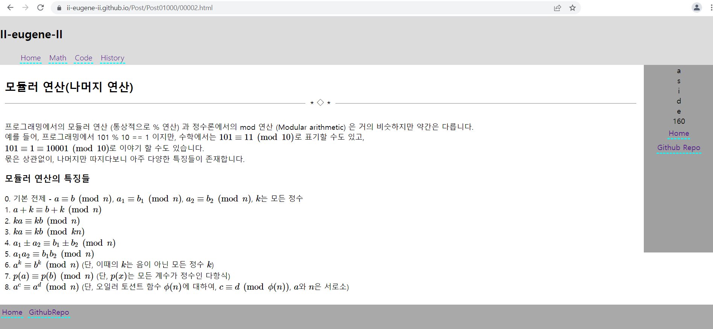
section에 width: calc(100% - 160px - 1rem) 속성을 먹여주자 (aside 의 width: 150px, section의 margin: 10px) 본문 크기가 제한되는 모습입니다.
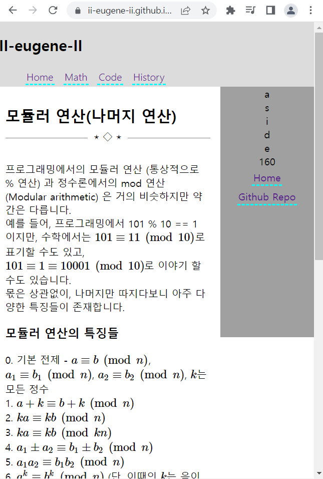
브라우저 크기를 왕창 줄여도 잘 적용 됩니다. - 1rem은 세세한 계산 오차로 인해 100% - 160px + 150px + 10px 이 100%를 넘어버리는 불상사를 방지하기 위해 존재하는듯 합니다.
8월 23일
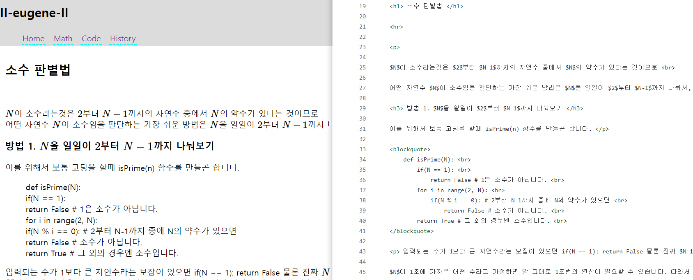
코딩 하다가 무언가를 건드릴때마다 문제가 터지는건 쉽게 볼 수 있습니다. 10번 건들면 12번 쯤 문제가 생기는듯 합니다.
blockquote로 코드 부분을 만들었더니 웹에는 저렇게 들여쓰기가 전혀 안 된 상태로 들어가게 됩니다.
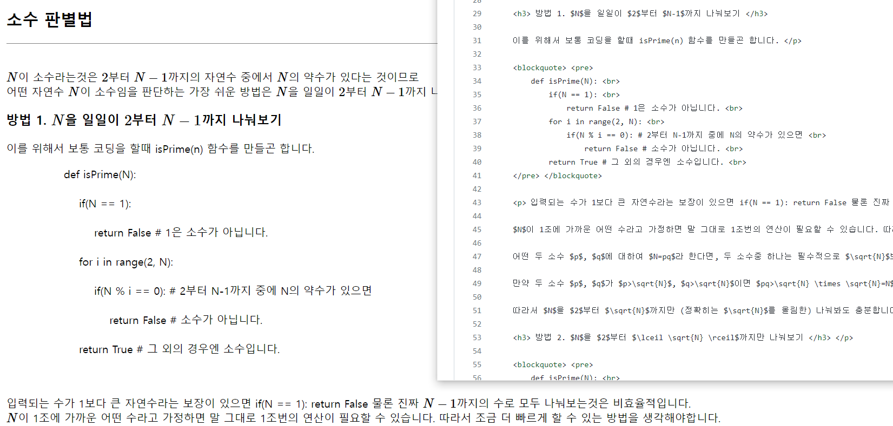
pre 태그를 쓰면 안의 태그는 자동으로 사용해주고 그 외의 모든 사항을 진짜 "쓴대로" 해준다고 합니다.
1차로 해결은 되었으나 찾아보니 딱히 적합한 해결방법인지는 솔직히 잘 모르겠습니다. 글씨체가 바뀐다는 점에서 조금 꺼려집니다. 일반 글처럼 소문자 대문자등 글자 크기가 각양각색이면 소스코드를 보여주는데에는 조금 부적합합니다.
그리고 찾다보니 github 과 연계된 서비스인 gist github을 알게 되었습니다.
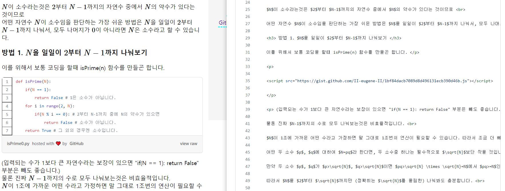
나름 이상적으로 들어온 모습입니다.
...왼쪽에 줄 번호마다 박스는 왜 쳐져있는지 모르겠습니다. 다른 어지간한 곳을 다 찾아봐도 딱히 저곳에 박스가 쳐진 곳은 한 곳도 없었습니다.
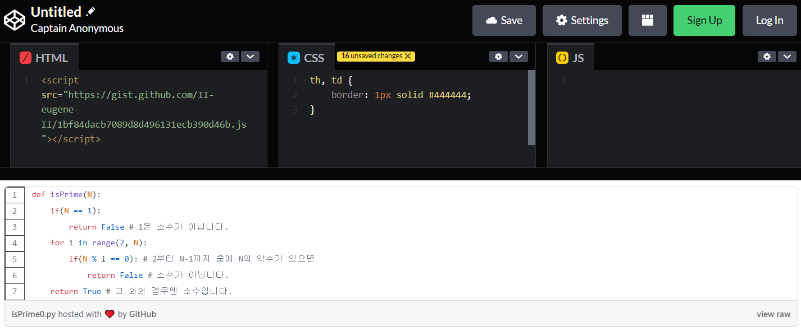
CSS 색상표 글 쓸때 td, th에 테두리 기능을 넣었는데, 그 여파가 여기까지 온 셈입니다. (정확히는 td 문제입니다.)
gist 시스템 자체를 바꿀 순 없으므로, 제가 앞으로 다른 td를 쓸 땐 td에 class를 붙여주는걸로 해결해야할 듯 합니다.
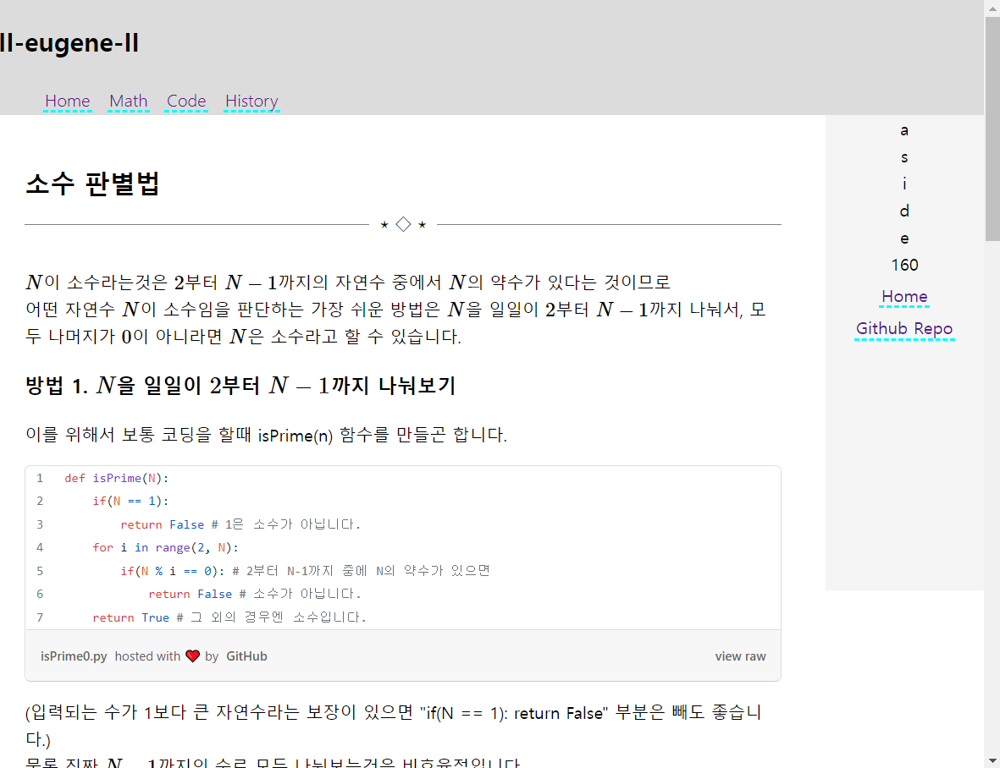
심미적으로는 이 부분을 수정한게 여태까지 했던 모든 작업중에 제일 만족스럽습니다.
* { Line-height : 160% } 줄 간격을 모두 160%로 먹여줬습니다. (기본 설정은 125%~140% 정도로 보입니다.)
LaTex가 생각보다 좀 큰 부분을 차지해서 약간 글자들이 버겁게 들어가있는 느낌이 기존에 들었다면, 이젠 좀 읽기 편안하게 되었습니다.
이제 header, footer, aside만(사실 제일 중요합니다.) 잘 처리하면 진짜 블로그처럼 보일 듯 합니다.
8월 27일
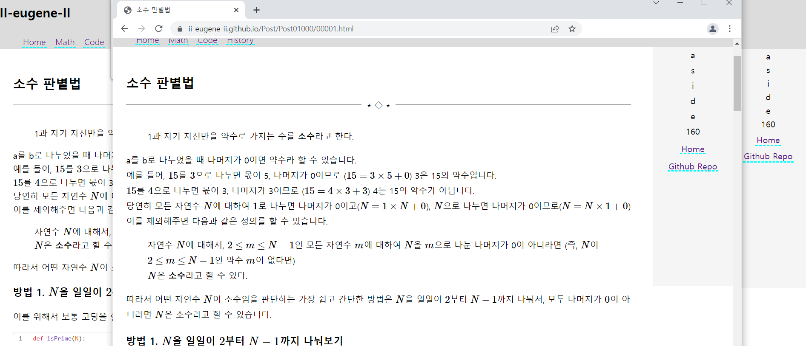
다른 블로그들과 비교해보니, 글씨 크기는 비슷하나 줄 간격이 굉장히 높은 모습을 보여주었습니다.
찾아보니 200%를 초과하지만 않으면 되는 느낌이라 190% 정도로 설정하였습니다. (LaTex 글씨도 약간 커서 180~190% 이상이 적합해보입니다.
8월 29일
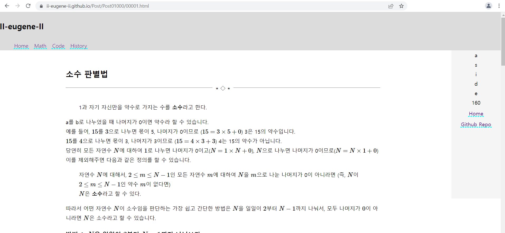
좌&우측 간격도 생각보다 넓게 해도 괜찮은 모습입니다.
기존에 약간 넙데데한 모습에서 탈피한 모습입니다.
다른 블로그들은 250~300px까지도 보이는 듯 합니다.
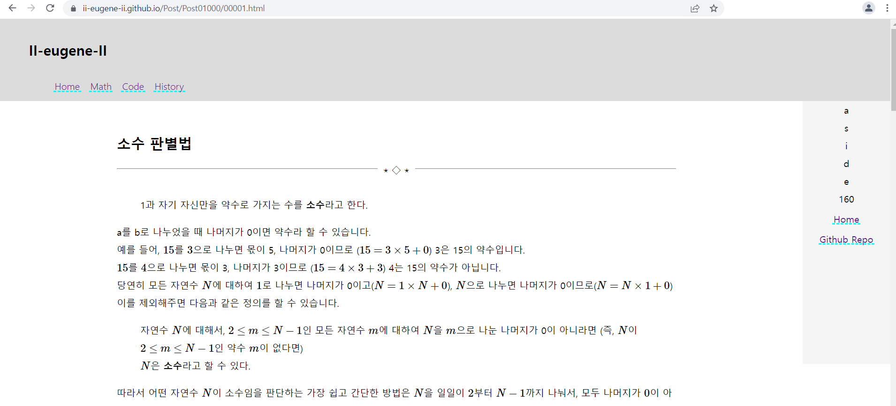
늘려주는 김에 header의 좌우간격도 늘려주어 II-eugene-II가 더 오른쪽으로 오게 해주었습니다. (50px)
9월 09일
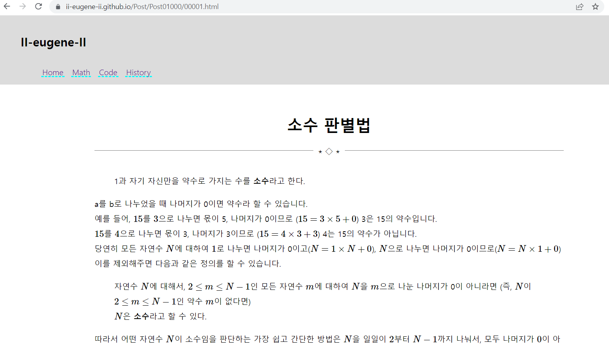
postTitle 이라는 id를 새로 만들어서, 글 제목에 적용해주었습니다.
가운데 정렬해서 밑의 모양과 안맞으면 어쩌지? 라는 걱정을 했으나 다행히 잘 맞는 모습입니다.
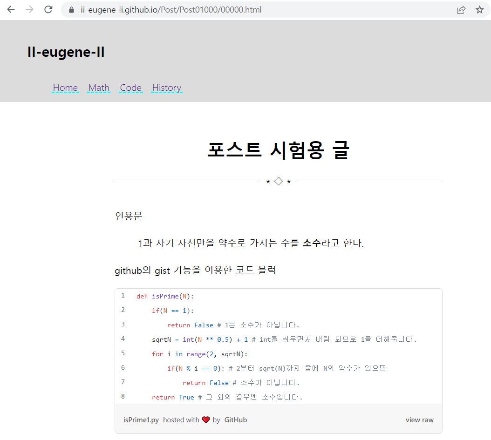
0번 게시글을 만들었습니다.
블로그에서 자주 쓸 것 같은 것들을 미리 보여주는 역할을 할 예정입니다.
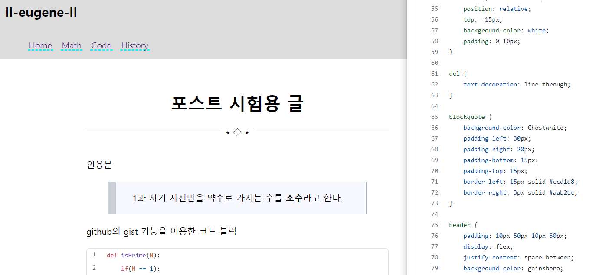
blockquote(인용문) 부분이 너무나도 허전해보여서 (그냥 보기에는 본문에 띄어쓰기 좀 넣은건지 인용문인지 분간이 안갑니다.) CSS로 꾸며주었습니다.
점점 하나하나 꾸며져갑니다.
다음에 하고 싶은 일은 조금 더 어려울 듯 한데, 밤에 이 블로그를 보고 있기엔 너무 밝아서 다크모드를 만들어보려 합니다.
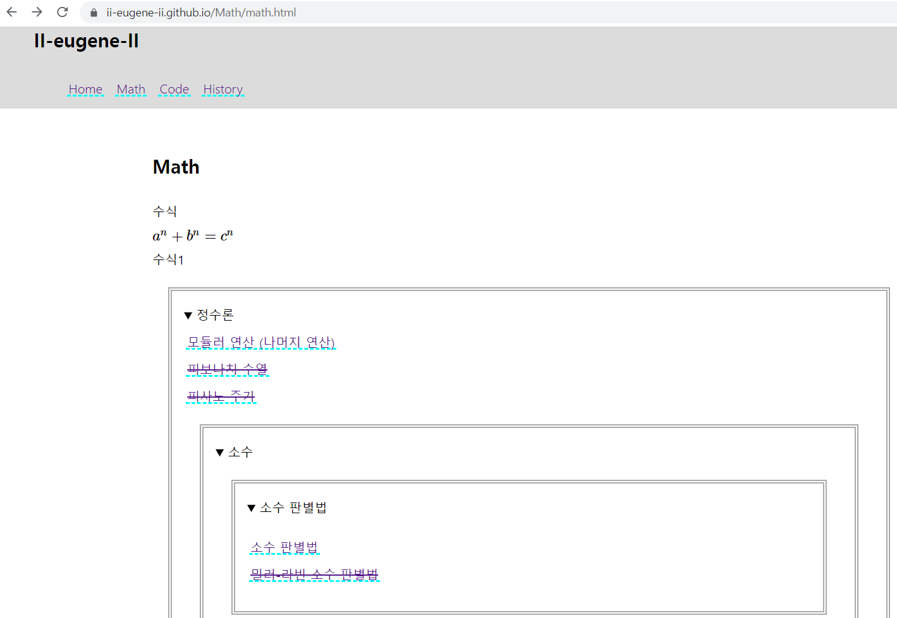
이 부분은 약간의 디테일로, 쓴 글과 아직 안 쓴 글을 구분하기 위하여 아직 안 쓴 글에는 취소선을 그어주었습니다.
이러면 제가 계속 저 페이지를 갈 때마다 어서 써야겠다는 생각이 조금이나마 더 들 듯 합니다.
10월 10일 (v.0.0.1)
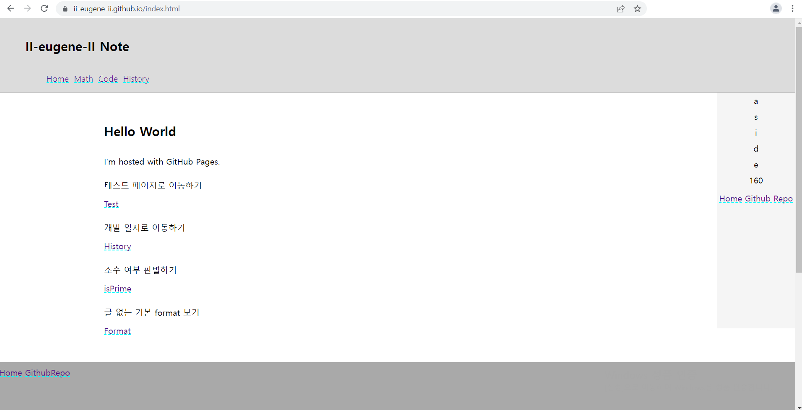
블로그에 저의 노트라는 이름을 붙여주었습니다.
메모라는 이름을 붙일까? 노트라는 이름을 붙일까? 북(책)이라는 이름을 붙일까? 를 고민하다가 메모라기엔 조금 방대한 양의 글 들을 몇개 쓸 것 같아서 메모란 이름은 접었고,
Book이라는 이름을 붙여주기엔 글이 아직 21개밖에 없어서 우선 노트라는 이름을 붙여주었습니다.
블로그에 이름을 붙여준 기념으로 오늘을 블로그 버전 0.0.1로 해주기로 합니다. 버전에 대한 특별한 이해가 있어서 이런 버전을 붙여준...것은 당연히 아니고 그냥 제 맘대로 붙여줬습니다.
앞으로 이런 기념할만한 날에는 버전을 조금씩 올려줄 듯 합니다.
그 전 자잘한 수정사항으로는 a태그 밑줄을 좀 얇게 만든것과, details 태그의 테두리를 5px에서 7px로 늘려주고, 헤더와 본문 사이에 가로선을 하나 그어주었습니다.
10월 12일 (td 클래스 추가)
추후 History에는 소제목을 가볍게 하나씩 붙여볼까 합니다.
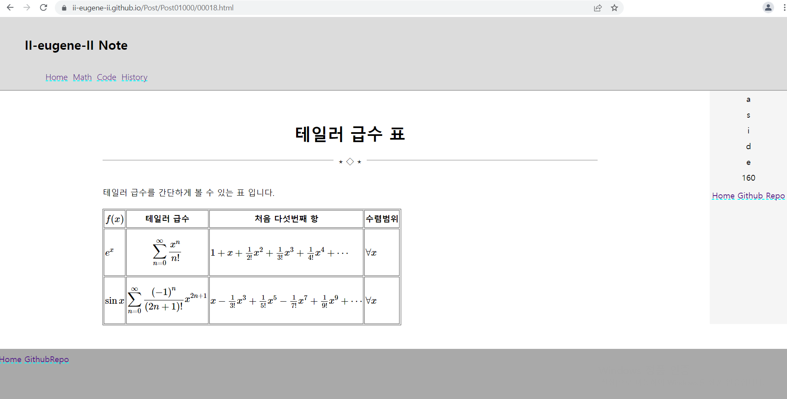
기존에 gist 코드블럭 문제 (8월 23일자) 로 td에 테두리를 붙여주지 못했는데, tdPost 라는 클래스를 추가해서 테두리를 붙여주었습니다.
th가 문제였으면 어떻게 스타일이라고 치고 넘어갈 수 있는데, td에 테두리를 붙여주지 못하니 여태까지 갑갑했는데 다행입니다.
11월 13일 (details 태그의 테두리 다듬기)
포스트 올리는거만 너무 신경써서(물론 포스트 올리는거도 아주 중요하지만...) 되도록이면 주말에는 CSS나 디자인적 부분도 하나씩 건드려 보려 합니다.
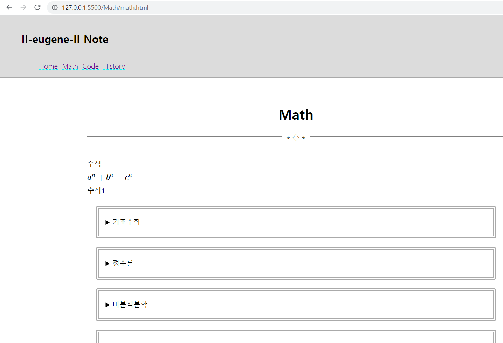
details 태그에 border-radius: 4px; 속성을 먹여주어 아주 약간은 테두리가 둥글어진 모습입니다.
그 전에는 너무 칼 같은 직사각형이었는데, 이제 약간은 부드러워진 모습입니다. (테두리 자체가 아주 두꺼운 형식은 아니라 아주 눈에 띄는 변화는 아니긴 합니다.)
11월 XX일